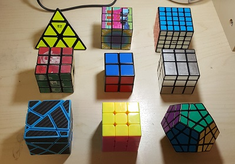
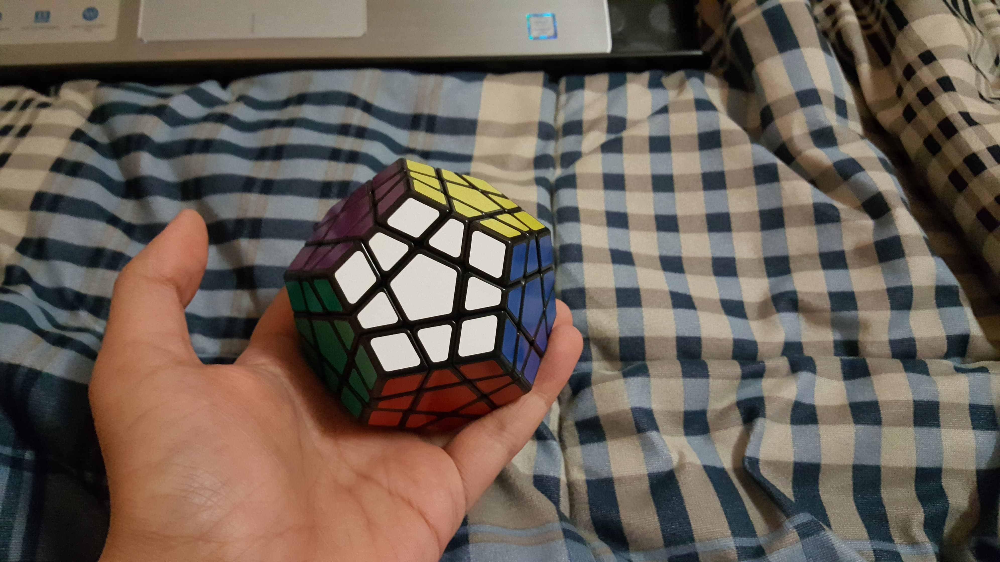
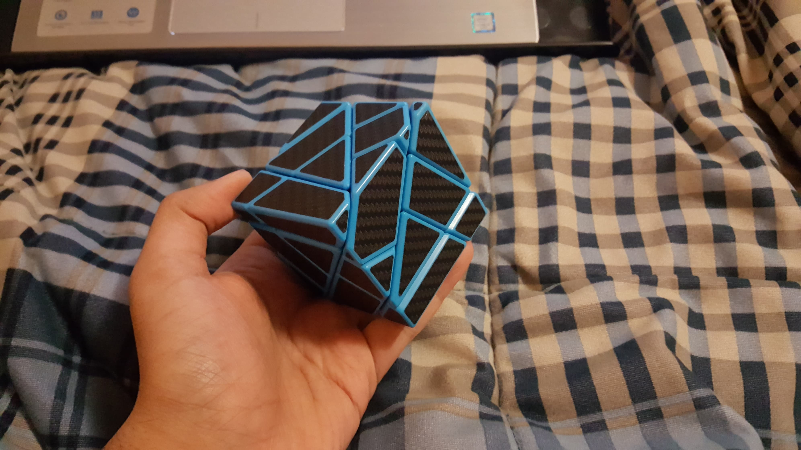

One of my hobbies is to solve Rubik's Cubes/twisty puzzles.
Below is a video of me solving a 3x3x3 Rubik's Cube in just under a minute.
I first looked up a tutorial on how to solve a 3x3x3 Rubik's Cube in grade 8 (2012).
From there, my interest in twisty puzzles grew as I learned to apply my solving knowledge from the 3x3x3 to more difficult puzzles.
Present day, I have a collection of 9 twisty puzzles, all of which (except for my first 3x3x3) I learned to solve on my own.
I definitely plan to grow my collection in the near future.
Below is a picture of my current collection of 9 twisty puzzles.

The puzzles in the respective rows from left to right go as follows:

This "cube" is a 12-sided twisty puzzle. It's otherwise known as a dodecahedron as a result of it's 12 sides.
It was given to me as a birthday gift last year from my sister.
The megaminx remains one of my proudest solves.
I managed to solve the puzzle in under 30 minutes on my first attempt, without any exernal aids (videos, adivice, etc).

This cube is rather interesting and always seems to catch the eyes of people that don't know what it is. It was a gift from my lovely friends.
At it's core, the Ghost Cube is a 3x3x3 cube. The shapes of it's pieces, however, make for a very interesting and challenging puzzle.
The first challenge, as odd as it may seem, was to figure out how to turn the cube's faces. At first glance, it doesn't seem like it would turn at all.
Once I managed to turn the faces and have the cube sufficiently mixed, I began the grusome solving process.
On my first attempt, I spent 5+ hours going in what seemed circles until I reched the last algorithm in order to solve it.
To my dismay, a combination of faces that are tricky to turn and adrenaline rushing around my body made me fall just short of what would've been a satisfying solve.
Having been defeated and humbled, I dwelled on my experience and called it a night (it must've been midnight); I was determined to solve it the next day.
I woke up with a vendetta as I proceeded to solve the cube first thing in the morning. Within 20 minutes, it was solved.
View my other pages: